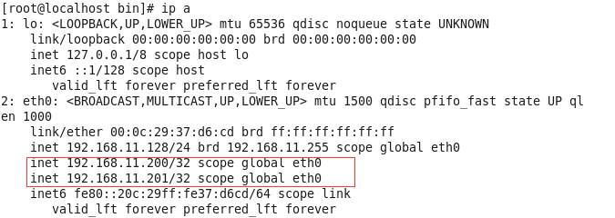

前言
MySQL的安装与节点间的同步复制在这就不在阐述，大家可以查看文档MySQL5.6在CentOS6.6安装步骤和MySQL5.6.25节点复制
环境
MySQL-VIP：192.168.11.200
MySQL-Master：192.168.11.128
MySQL-Slave：192.168.11.129
OS版本：CentOS 6.6
MySQL版本：5.6.25
Keepalived版本：1.2.19
keepalived的安装
首先在安装keepalived之前检查下是否安装了openssl
shell> rpm -qa|grep openssl
查的结果表示已经安装了或者需要安装1
shell>yum –y install openssl-devel
下载解压安装keepalived1
2
3
4
5
6shell>wget http://www.keepalived.org/software/keepalived-1.2.19.tar.gz
shell>tar -zxvf keepalived-1.2.19.tar.gz
shell>cd keepalived-1.2.19
shell>./configure --prefix=/usr/local/keepalived
shell>make
shell>make install
keepalived相关文件复制到系统对应的目录下
1 | shell>cp /usr/local/keepalived/etc/rc.d/init.d/keepalived /etc/rc.d/init.d |
keepalived 配置
1 | shell>vi /etc/keepalived/keepalived.cnf |
编写检测服务down后所执行的脚本1
2
3
4shell>vi /usr/local/mysql/bin/mysql.sh
#杀掉keepalived 的进程
pkill keepalived
shell> chmod 744 /usr/local/mysql/bin/mysql.sh
注：此脚本是上面配置文件notify_down选项所用到的，keepalived使用notify_down选项来检查real_server的服务状态，当发现real_server服务故障时，便触发此脚本；我们可以看到，脚本就一个命令，通过pkill keepalived强制杀死keepalived进程，从而实现了MySQL故障自动转移。另外，我们不用担心两个MySQL会同时提供数据更新操作，因为每台MySQL上的keepalived的配置里面只有本机MySQL的IP+VIP，而不是两台MySQL的IP+VIP
在这样只有一个vrrp_instance 的环境里，主负载均衡器(MASTER)与备份负载均衡器（BACKUP）配置文件的差异一共只有3处: 全局定义的route_id、vrrp_instance state已经vrrp_instance的优先级priority
测试
启动MySQL ,keepalived1
2
3sheel>service mysqld start
sheel>service keepalived start
sheel>service iptables stop
查看vip 是否已经帮到到了网卡eth01
shell>ip a

关闭myql服务或vip已经绑定在了192.18.11.129上了表示测试成功